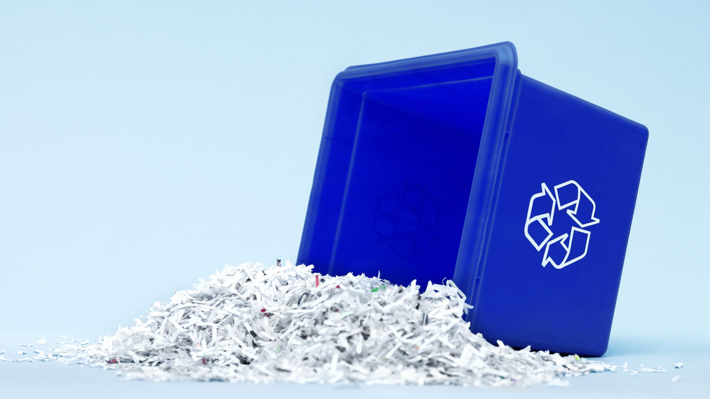
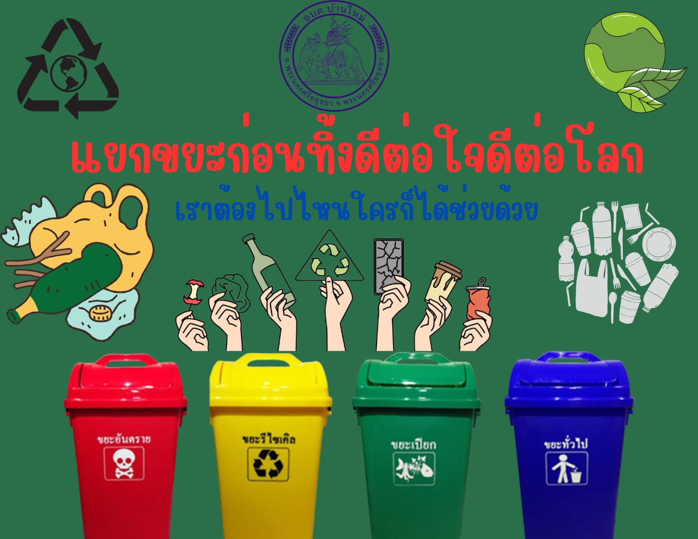
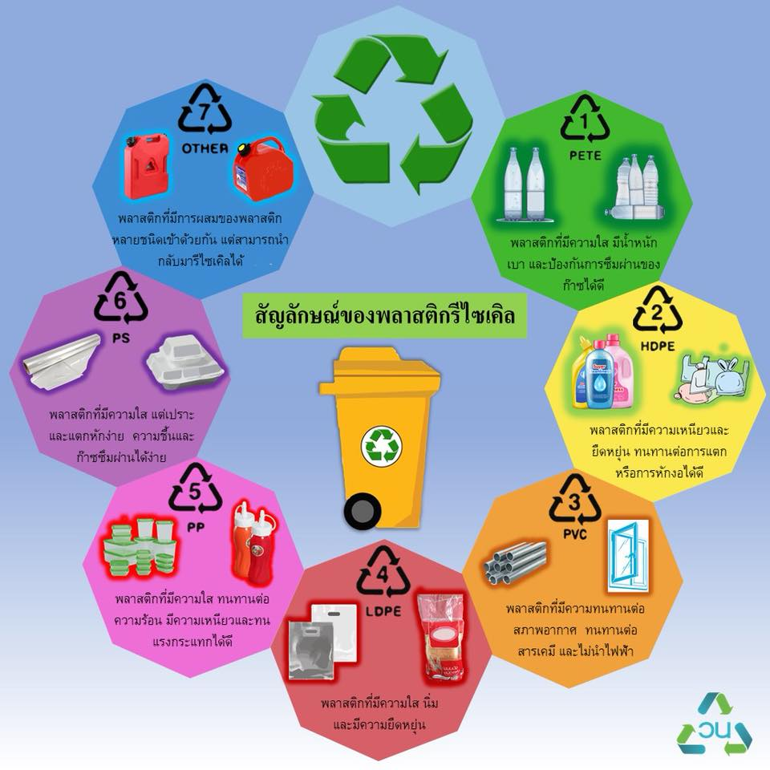
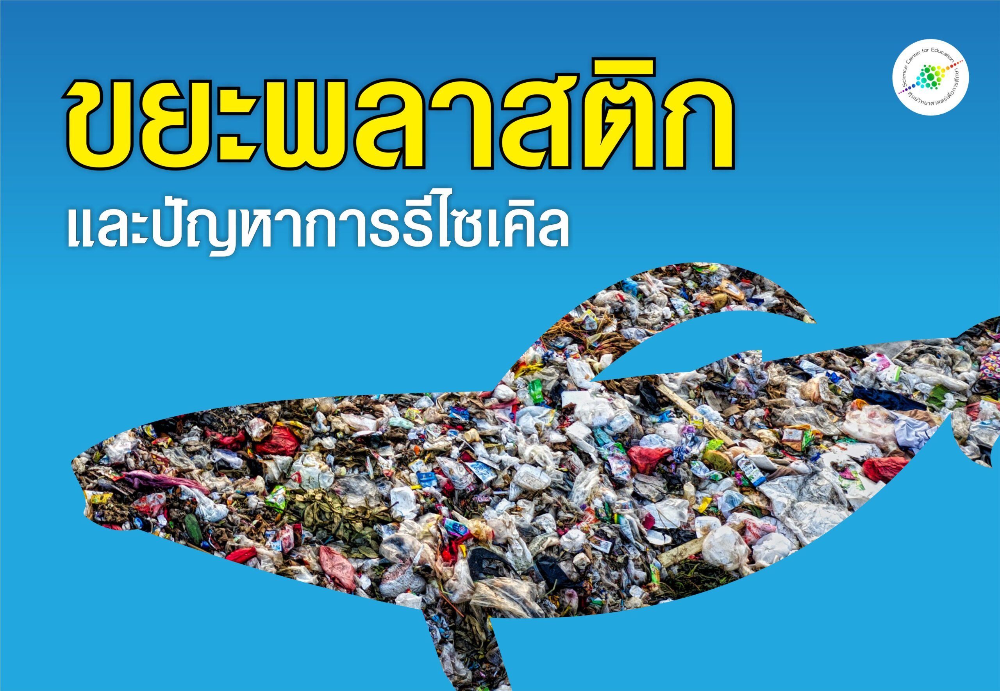
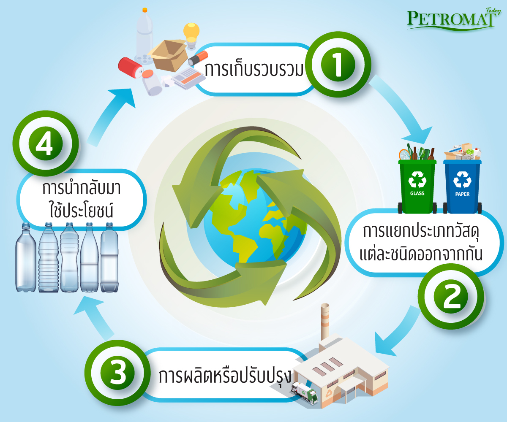

RECYCLING

ประโยชน์ของการรีไซเคิล
1. ลดปริมาณขยะในหลุมฝังกลบ
2. ลดการตัดไม้ทำลายป่า
3. ประหยัดพลังงานในการผลิตสินค้าใหม่
4. ลดการปล่อยก๊าซเรือนกระจก
UNCATEGORIZED

ข้อควรรู้ก่อนทิ้งขยะรีไซเคิล
1. แยกประเภทขยะ เช่น กระดาษ พลาสติก แก้ว และโลหะ
2. ล้างทำความสะอาดก่อนทิ้ง
3. ทำให้แห้งเพื่อลดความชื้น
4. บีบหรือพับเพื่อลดขนาด
5. ไม่ทิ้งขยะอันตรายรวมกับขยะรีไซเคิล
RECYCLING

สัญลักษณ์รีไซเคิลบนพลาสติก
1.PET ขวดน้ำ รีไซเคิลง่าย
2.HDPE ขวดนม ขวดแชมพู รีไซเคิลได้ดี
3.PVC ท่อพลาสติก รีไซเคิลยาก
4.LDPE ถุงพลาสติก รีไซเคิลได้บางที่
5.PP กล่องอาหาร รีไซเคิลได้
6.PS โฟม รีไซเคิลยาก
7.OTHER พลาสติกผสม รีไซเคิลยากมาก
RECYCLING

ทำไมการรีไซเคิลจึงสำคัญต่อโลก
1.ลดการใช้ทรัพยากรธรรมชาติ เช่น ไม้ น้ำมัน แร่ธาตุ
2.ลดปริมาณขยะที่ต้องฝังกลบ
3.ลดมลพิษทางอากาศและน้ำ
4.ช่วยชะลอภาวะโลกร้อน
UNCATEGORIZED

ตัวอย่างกระบวนการรีไซเคิล
รีไซเคิลกระดาษ
คัดแยก → บดเป็นเยื่อ → กรอง → ผลิตเป็นกระดาษใหม่
รีไซเคิลพลาสติก
คัดแยก → ล้าง → บดเป็นเม็ด → หลอมขึ้นรูปใหม่